Q001数学
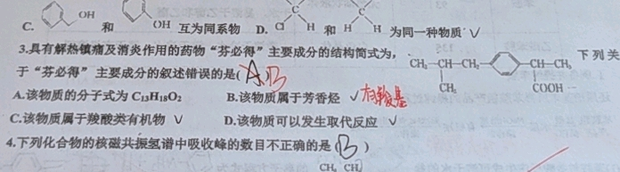
某地普法小组安排 4 名男性普法员和 2 名女性普法员前往甲、乙、丙三个社区进行宣讲，每名普法员只能前往一个社区，每个社区至少有 1 名普法员，则 2 名女性普法员被安排在不同社区的方案共有____种。
答案: 390
知识点: 排列组合、分步计数原理
Q002数学

若函数 f(x) = (lnx)/x + a - 1/x² 有两个极值，则实数 a 的取值范围为____。
答案: (2/e², +∞)
知识点: 导数应用、函数极值、参数范围
Q003生物
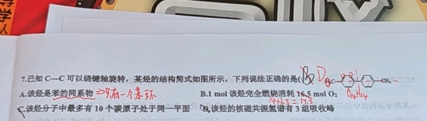
诱导多能干细胞 (iPSCs) 在生物医药领域有广阔的应用前景。研究人员利用多种小分子化合物协同诱导小鼠胎儿成纤维细胞，成功获得 iPSCs。相关叙述错误的是（ ）
A. 利用胰蛋白酶处理小鼠胎儿某些组织可获得分散的成纤维细胞
B. 小分子化合物改变了小鼠胎儿成纤维细胞的基因表达
C. 小鼠胎儿成纤维细胞形成 iPSCs 的过程属于细胞分化
答案: C
知识点: 细胞重编程、诱导多能干细胞、细胞分化与去分化
Q004生物
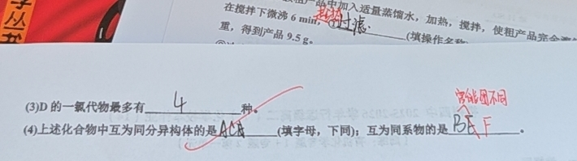
三维细胞培养技术，是一种在实验室中以三维结构培养和繁殖活细胞的方法。与传统的二维细胞培养相比，三维细胞培养更接近人体内细胞的自然环境，能够更好地模拟体内细胞的生长和相互作用。下列叙述正确的是（ ）
A. 三维细胞培养通常采用与二维相同的胰蛋白酶处理时间进行传代，以保证细胞充分分散
B. 三维细胞的培养不存在接触抑制现象，因此三维细胞培养增长速率比二维细胞培养更快
C. 三维细胞与培养基的接触面积更小，有利于营养物质的吸收和代谢废物的排出
D. 三维培养中细胞更容易维持正常的形态和分化功能，常用于构建器官模型进行疾病研究
答案: D
知识点: 三维细胞培养技术、细胞培养条件、接触抑制
Q005生物
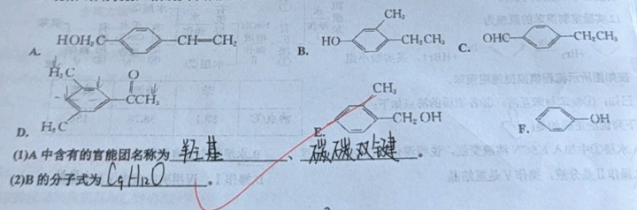
关于植物细胞培养技术，下列叙述错误的是（ ）
A. 植物细胞培养技术经历了脱分化、再分化的过程
B. 用愈伤组织制备细胞悬液进行扩大培养
C. 外植体用化学试剂消毒后需经无菌水冲洗才可用于接种
D. 为诱导愈伤组织的形成，培养基中需要保持细胞分裂素多生长素少
答案: D
知识点: 植物组织培养、植物激素调节、脱分化与再分化
Q006物理

点波源 S₁ 和 S₂ 分别位于 A、B 两点，形成频率相同、波长均为 0.5m 的两列波。已知 AC 中点 D 为振动减弱点，BC=3m，∠BAC=37°，BC⊥AB。则下列描述正确的是（ ）
A. C 点为振动加强点
B. AB 中点为振动加强点
C. AB 连线上（不含端点）有 16 个振动减弱点
D. AB 连线上（不含端点）有 16 个振动加强点
答案: D
知识点: 波的干涉、波程差、同相/反相波源
Q007物理

在盛有浅水的水槽中，t=0 时刻以相同频率拍打水面上两个点 S₁ 和 S₂ 产生两列波，两波源相距 9cm，频率为 2Hz，连线中点处有一浮标始终未振动。距 S₂ 12cm 处有一 P 点，PS₂⊥S₁S₂，经过 3s 后 P 点开始振动，下列说法中正确的是（ ）
A. 两列波不能发生干涉
B. t=4s 时 P 点的振动方向与 S₁ 的起振方向相同
C. 若只改变 S₂ 的频率则浮标也有可能还是保持静止
D. S₁P 连线上（两端点除外）共有 6 个振动减弱点
答案: D
知识点: 波的干涉、波程差、同相/反相波源
Q008化学
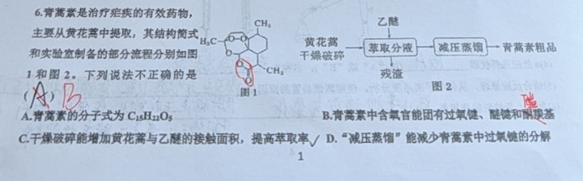
青蒿素是治疗疟疾的有效药物，主要从黄花蒿中提取，其结构简式和实验室制备的部分流程如图。下列说法不正确的是（ ）
A. 青蒿素的分子式为 C₁₅H₂₁O₅
B. 青蒿素中含氧官能团有过氧键、醚键和酯基
C. 干燥破碎能增加黄花蒿与乙醚的接触面积，提高萃取率
D. 减压蒸馏能减少青蒿素中过氧键的分解
答案: A
知识点: 有机物分子式判断、官能团识别、萃取原理、减压蒸馏
Q009化学

有机物命名：结构 CH₃-CH(CH₂CH₃)-CH₂-CH₃，下列命名正确的是（ ）
A. 2-乙基丁烷
B. 3-甲基戊烷
C. 2-甲基戊烷
D. 3-乙基丁烷
答案: B
知识点: IUPAC命名规则、最长碳链原则
Q010化学

下列有关官能团的说法错误的是（ ）
A. CH₃OOC-环己烯-COOCH₃ 中的官能团为碳碳双键和酯基
B. 某化合物中的含氧官能团为（酚）羟基和羰基
C. 高分子膨胀剂中的官能团为羧基和羟基
D. H₂C=CHCH₃ + Br₂（光照）→ H₂C=CHCH₂Br 中生成的官能团是溴原子
答案: C
知识点: 官能团识别、苯环结构特点、取代反应
Q011物理
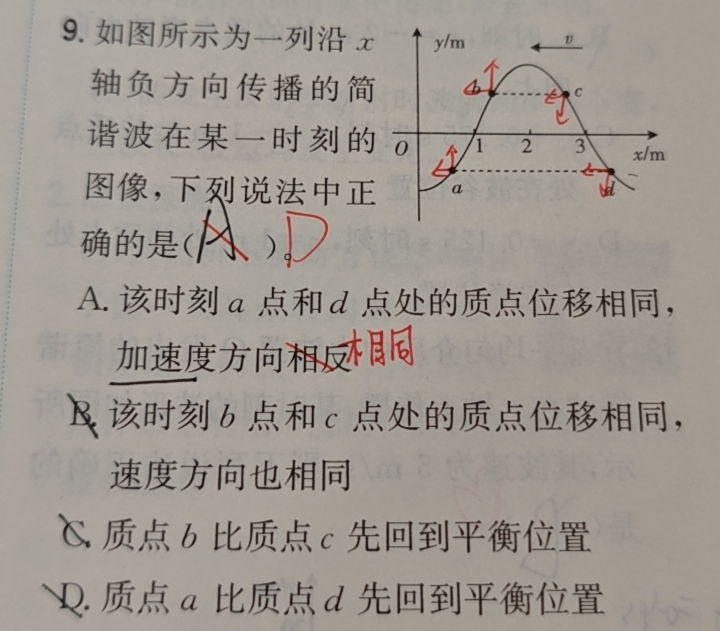
简谐波沿 x 轴负方向（向左）传播，波形如图。关于各质点运动情况判断正确的是（ ）
A. a 和 d 位移相同，加速度方向相反
B. b 和 c 位移相同，速度方向也相同
C. b 比 c 先回到平衡位置
D. a 比 d 先回到平衡位置
答案: D
知识点: 波动图像、质点振动方向判断、微平移法
Q012物理

A、B 两列波在某时刻波形如图，经过 t = T_A，两波再次出现如图波形。在长度 a 内，A 波完成 1 个周期，B 波完成 1.5 个周期。则 v_A : v_B 不可能是（ ）
A. 1:3 B. 1:2 C. 2:1 D. 3:1
答案: A
知识点: 波的周期性、波长波速关系、多解问题
Q013物理

波源S在O点做频率10Hz的竖直简谐运动，t₀时刻向右传播的波形如图，向左传播的波形未画出。下列说法正确的是（多选）
A. t₀时刻，x=1m处质点振动方向向上
B. t₀时刻，x=-2m处质点振动方向向上
C. t₀+0.175s，x=-1m处质点在波谷
D. t₀-0.125s，x=1m处质点在波峰
答案: A,C
知识点: 双向传播波、波形对称性、时间推算质点位置
Q014化学
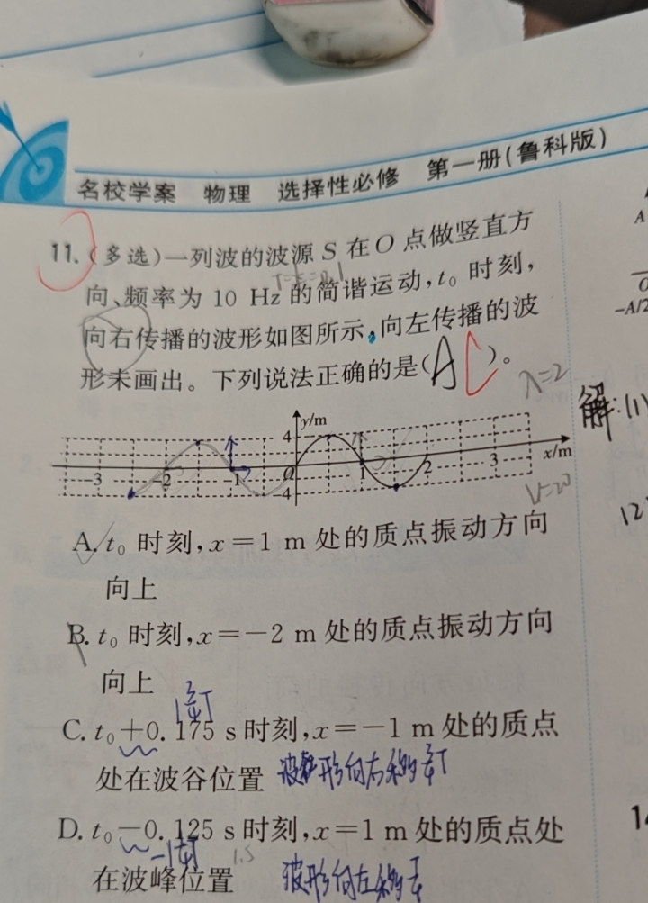
下列现象的变化与配合物的形成无关的是（ ）
A. FeCl₃溶液中滴入KSCN溶液后变红色
B. 向CuCl₂溶液中加水，溶液颜色由绿色变为蓝色
C. 向Al(OH)₃沉淀中加入NaOH溶液，沉淀溶解
D. 向AlCl₃溶液中加入过量氨水，产生白色沉淀
答案: D
知识点: 配合物形成、Al(OH)₃两性、氨水与NaOH的区别
Q015物理
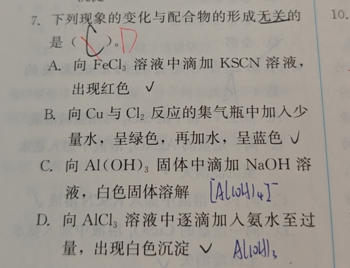
一列波长大于1m的横波沿x轴正方向传播，A在x₁=1m，B在x₂=2m。A、B两质点的振动图像如图，周期T=4s，振幅A=2cm。下列说法正确的是（ ）
A. 波长为4/3m B. 波速为1m/s C. 3s末A、B两质点位移相同 D. 1s末A质点的振动速度大于B
答案: B
知识点: 振动图像、波长计算、波速公式
Q016生物
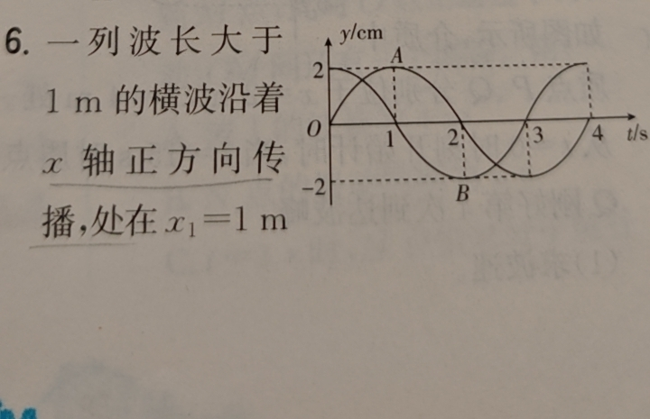
如图为某小组培养的肝肿瘤细胞（甲）和正常肝细胞（乙），下列叙述正确的是（ ）
A. 用剪刀剪碎后用胃蛋白酶处理可分散成单个细胞
B. 细胞培养过程中要通入5%CO₂刺激细胞呼吸
C. 培养液中加入干扰素可防止杂菌污染
D. 在原代培养中，乙细胞会出现停止增殖的现象
答案: D
知识点: 动物细胞培养条件、接触抑制、CO₂的作用
Q017化学
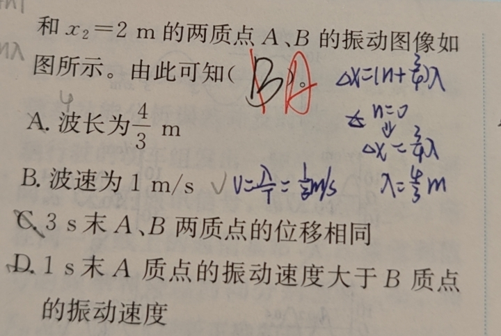
铁的某种配合物化学式为[Fe(Htrz)₂](ClO₄)₂，其中Htrz=1,2,4-三氮唑。填空：①配合物中阴离子的空间构型为____，该阴离子中心原子的杂化方式为____。②Htrz分子中含____个σ键，与Fe²⁺形成配位键的原子为____。
答案: ①正四面体形,sp³ ②8,N
知识点: 配合物结构、VSEPR理论、杂化轨道、σ键计数
Q018化学
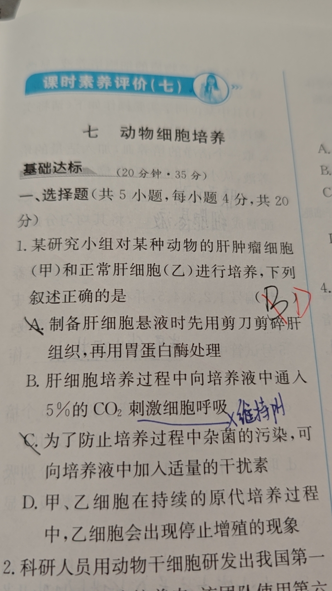
下列有机物分子中，含有两个手性碳原子的是（ ）
A. CH₂OH-CHOH-CHO B. CH₂Br-CHBr-CHClF C. HOOC-CHBr-CH(OH)-CH₂Br D. CH₃-C(OH)(CHCl)-C₆H₅
答案: C
知识点: 手性碳判断、四个不同基团
Q019物理
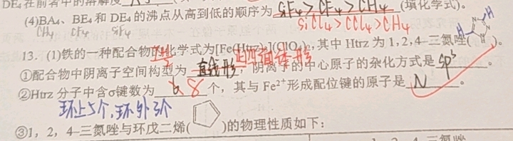
一列横波沿x轴正方向传播，波长λ=0.8m，振幅A=2cm，波速v=0.8m/s。质点M在x=0.5m处。求：(1)M的起振方向；(2)t=2s时M的纵坐标；(3)0到2s内M通过的路程。
答案: (1)沿y轴负方向 (2)0 (3)20cm
知识点: 波动综合、波传播时间、质点振动、路程计算
Q020生物

动物细胞培养过程中，属于原代培养的是（ ）
A. 用胰蛋白酶使组织分散成单个细胞的过程
B. 从机体取得细胞后立即进行培养的过程
C. 出现接触抑制后接下来的细胞培养
D. 悬浮生长过程
答案: B
知识点: 原代培养vs传代培养、细胞培养阶段
Q021化学
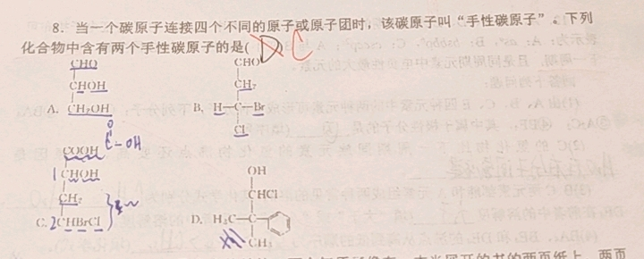
关于同分异构体异构方式的说法中，不正确的是（ ）
A. 正丁烷和异丁烷属于碳链异构
B. 2-丁炔和1,3-丁二烯属于官能团异构
C. （选项未拍全）
D. （选项未拍全）
答案: （题目未拍全，待补充）
知识点: 同分异构体分类：碳链异构、位置异构、官能团异构
Q022化学
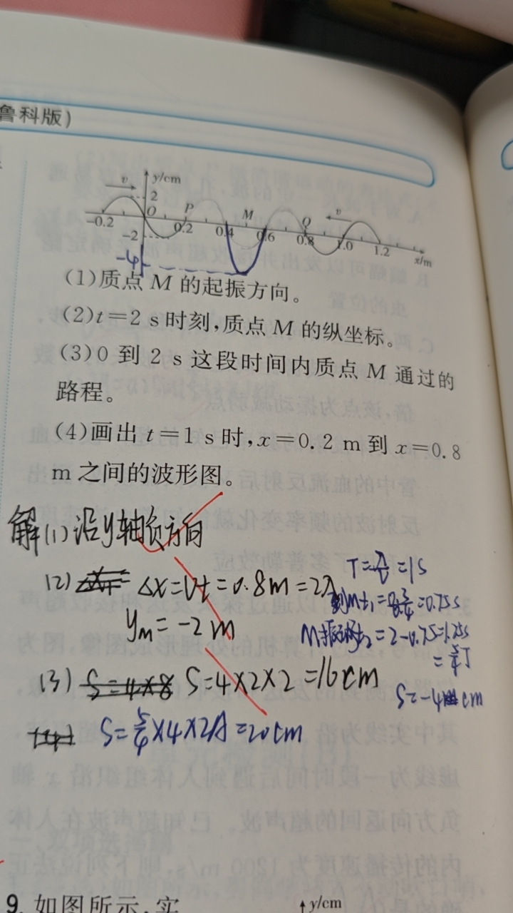
下列各组有机物中，互为同分异构体的是（ ）
A. 两个邻二甲苯 B. 双环酮化合物与开链醛化合物 C. 两个2-甲基丁烷 D. 两个二氯甲烷
答案: B
知识点: 同分异构体判断、同一物质vs异构体
Q023化学
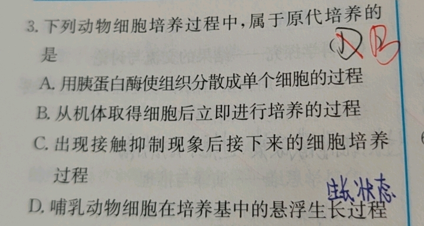
下列说法不正确的是（ ）
A. BF₃和SO中B、S杂化轨道类型相同，VSEPR模型均为平面三角形
B. CH₄、CCl₄都是含有极性键的非极性分子
C. C₂²⁻与O₂²⁺互为等电子体，1mol O₂²⁺中π键数目为2N_A
D. AB₂的空间结构为V形，则A为sp³杂化
答案: D
知识点: VSEPR理论、杂化判断、等电子体、分子极性
Q024生物
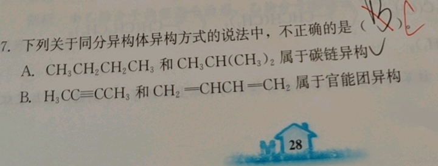
愈伤组织在植物细胞工程中应用广泛。愈伤组织可用于（ ）
A. 在NAA/6-BA比值高的培养基中诱导形成芽
B. 利用离体诱变技术定向获得所需优良植株
C. 通过酶解法去除细胞壁获得球形的原生质体
D. 悬浮振荡培养获得细胞系后直接投入发酵生产
答案: C
知识点: 愈伤组织应用、植物激素配比、诱变育种随机性
Q025生物
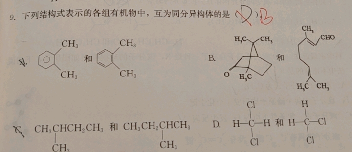
科学家培育克隆猴的基本步骤，下列相关叙述不正确的是（ ）
A. 动物细胞核移植技术，体现了动物细胞的全能性
B. 对A猴卵母细胞去核是为了保证克隆猴的核遗传物质都来自B猴
C. 必须将重组细胞培育到一定程度后才能植入代孕动物体内
D. A猴的卵母细胞的细胞质中含有促进B猴体细胞核全能性表达的物质
答案: A
知识点: 动物核移植、细胞全能性vs细胞核全能性、胚胎移植
Q026生物
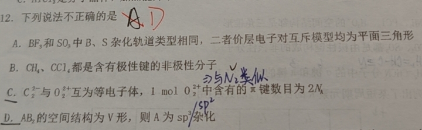
治疗性克隆过程如图。下列说法不正确的是（ ）
A. 细胞A通常用显微操作去核的MII期卵母细胞
B. 胚胎干细胞分化为多种体细胞是基因选择性表达的结果
C. 动物细胞培养需提供95%O₂和5%CO₂混合气体
D. 该治疗性过程应用了核移植、动物细胞培养等技术
答案: C
知识点: 治疗性克隆、核移植、动物细胞培养条件、O₂/CO₂的作用
Q027数学
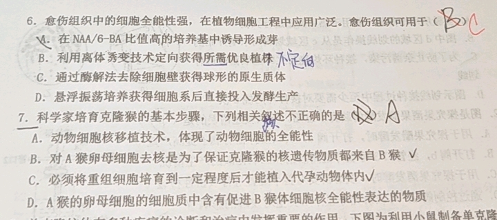
从编号 1~15 的 15 张卡片中依次不放回地抽出两张。记事件 A：'第一次抽到数字为 5 的倍数'，事件 B：'第二次抽到的数字小于第一次'。求 P(B|A)。
答案: 9/14
知识点: 条件概率、分类讨论、不放回抽样
Q028化学

具有6个配体的Co的配合物 CoCl_m·nNH3，若1mol该配合物与1mol AgNO3反应生成1mol AgCl沉淀，则m、n的值是（ ）
A. m=1, n=5 B. m=3, n=4 C. m=5, n=1 D. m=4, n=5
答案: B
知识点: 配合物内界外界、配位数、AgNO3沉淀反应
Q029化学

在CuCl2溶液中存在如下平衡：[CuCl4]2-(黄绿色)+4H2O ⇌ [Cu(H2O)4]2+(蓝色)+4Cl⁻，下列说法不正确的是（ ）
A. 将CuCl2固体溶于少量水中得到黄绿色溶液
B. 将CuCl2固体溶于大量水中得到蓝色溶液
C. [CuCl4]2-和[Cu(H2O)4]2+都是配离子
D. 从上述平衡可以看出[Cu(H2O)4]2+比[CuCl4]2-稳定
答案: D
知识点: 配合物平衡移动、勒夏特列原理、CuCl2溶液颜色
Q030化学
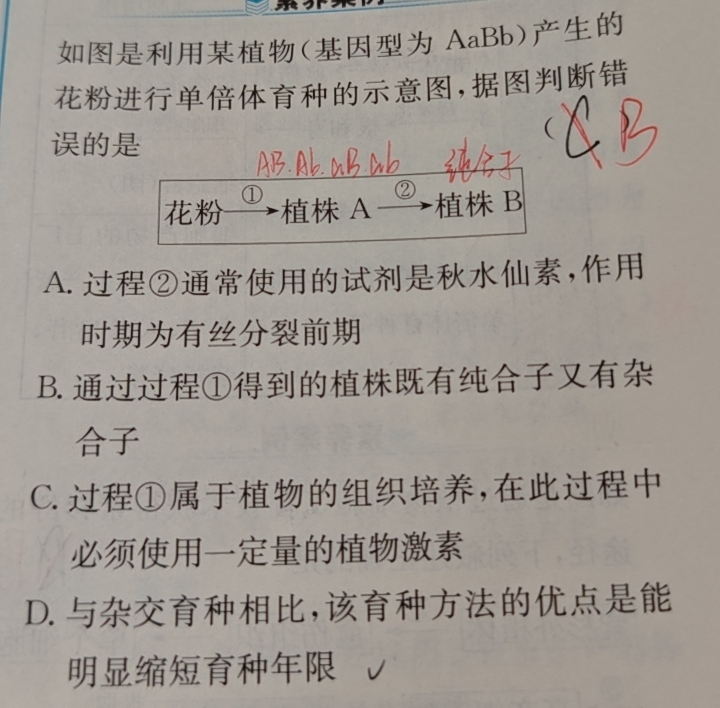
理论化学模拟得到一种N13+离子，结构为中心N连4个N=N=N臂。下列说法错误的是（ ）
A. 所有原子均满足8电子结构
B. N原子的杂化方式有2种
C. 空间结构为四面体形
D. 1个N13+离子中含有12个σ键
答案: B
知识点: 杂化方式判断、8电子结构、σ键计数、空间构型
Q031物理
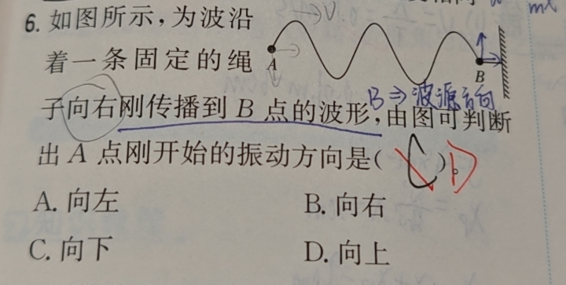
B超检测仪，实线为沿x轴正方向发送的超声波，虚线为返回的波。v=1200m/s。下列说法正确的是（ ）
A. 此超声波的频率为1.2×10⁵ Hz
B. 质点B在此后1×10⁻⁴s内运动路程为0.12m
C. 质点A此时沿y轴正方向运动
D. 质点A、B两点加速度大小相等、方向相同
答案: C,D
知识点: 超声波、波长频率波速关系、质点振动方向、加速度
Q032物理

波沿固定绳向右刚传播到B点，由图可判断A点刚开始的振动方向是（ ）
A. 向左 B. 向右 C. 向下 D. 向上
答案: D
知识点: 波的传播、质点起振方向、波前判断
Q033生物
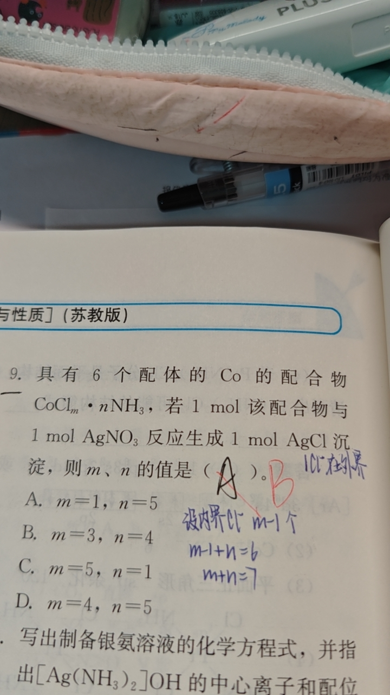
通过植物细胞工程技术获得紫杉醇：紫杉外植体→①→愈伤组织→②→单个细胞→③→高产细胞群→提取紫杉醇。叙述正确的是（ ）
A. 该途径体现了植物细胞的全能性
B. 过程①需控制好培养基中植物激素的比例
C. 经过程①细胞的形态和结构未发生变化
D. 过程③需使用固体培养基，有利于细胞增殖
答案: B
知识点: 植物细胞工程、细胞产物工厂化生产、脱分化
Q034生物
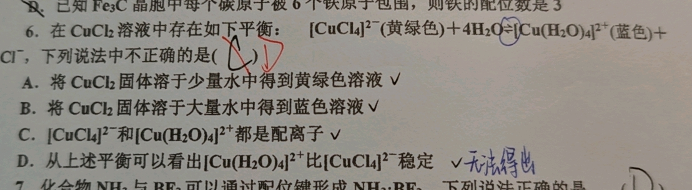
利用植物(AaBb)的花粉进行单倍体育种：花粉→①→植株A→②→植株B。判断错误的是（ ）
A. 过程②通常使用秋水仙素，作用时期为有丝分裂前期
B. 通过过程①得到的植株既有纯合子又有杂合子
C. 过程①属于植物组织培养，必须使用植物激素
D. 与杂交育种相比，优点是能明显缩短育种年限
答案: B
知识点: 单倍体育种、花药离体培养、秋水仙素作用、纯合子
Q035生物
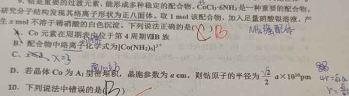
利用山金柑愈伤组织(2N)和旱花柠檬叶肉细胞(2N)体细胞杂交。核DNA和线粒体DNA来源鉴定如图。分析正确的是（ ）
A. 诱导原生质体融合有物理法、化学法和灭活病毒诱导法
B. 细胞融合后放无菌蒸馏水中防污染
C. 可通过比较融合后细胞的颜色进行初步筛选
D. 杂种细胞经组织培养得到的杂种植株是四倍体
答案: C
知识点: 植物体细胞杂交、原生质体融合、杂种细胞筛选、DNA鉴定
Q036化学
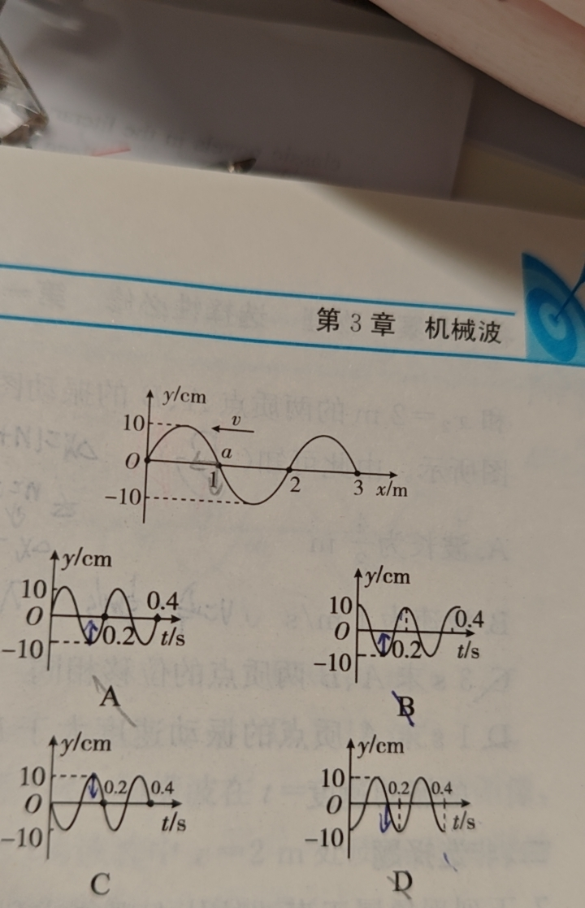
分子式为C4H8BrCl的有机物共有（不含立体异构）（ ）
A. 8种 B. 10种 C. 12种 D. 14种
答案: C
知识点: 同分异构体计数、卤代烃、碳骨架异构
Q037生物

如图是利用某植物（基因型为 AaBb）产生的花粉进行单倍体育种的示意图，据图判断错误的是：
过程：花粉 → ①植株A → ②植株B
A: 过程②通常使用的试剂是秋水仙素，作用时期为有丝分裂前期
B: 通过过程①得到的植株既有纯合子又有杂合子
C: 过程①属于植物的组织培养，在此过程中必须使用一定量的植物激素
D: 与杂交育种相比，该育种方法的优点是能明显缩短育种年限
答案: B
知识点: 单倍体育种、花药离体培养
Q038生物
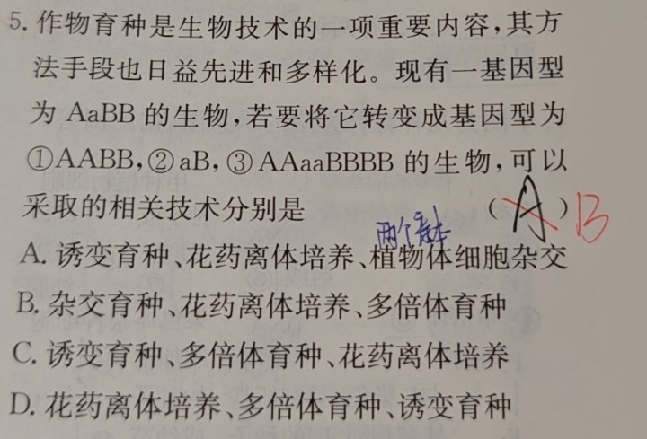
作物育种是生物技术的一项重要内容。现有一基因型为 AaBB 的生物，若要将它转变成基因型为 ①AABB，②aB，③AAaaBBBB 的生物，可以采取的相关技术分别是
A: 诱变育种、花药离体培养、植物体细胞杂交
B: 杂交育种、花药离体培养、多倍体育种
C: 诱变育种、多倍体育种、花药离体培养
D: 花药离体培养、多倍体育种、诱变育种
答案: B
知识点: 育种技术（杂交育种、花药离体培养、多倍体育种）
Q039物理
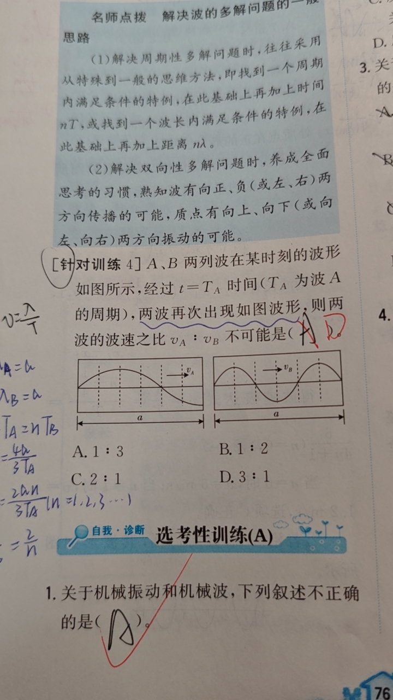
A、B 两列波在某时刻的波形如图所示，经过 t=TA 时间（TA 为波 A 的周期），两波再次出现如图波形，则两波的波速之比 vA:vB 不可能是
A: 1:3
B: 1:2
C: 2:1
D: 3:1
答案: D
知识点: 波的多解问题、波速比
Q040物理
关于机械振动和机械波，下列叙述不正确的是
A: （题目内容需从图中识别）
答案: A
知识点: 机械振动和机械波
Q041物理

如图所示，为波沿着一条固定的绳子向右刚传播到 B 点的波形，由图可判断出 A 点刚开始的振动方向是
A: 向左
B: 向右
C: 向下
D: 向上
答案: D
知识点: 波的传播方向判断、起振方向
Q042生物
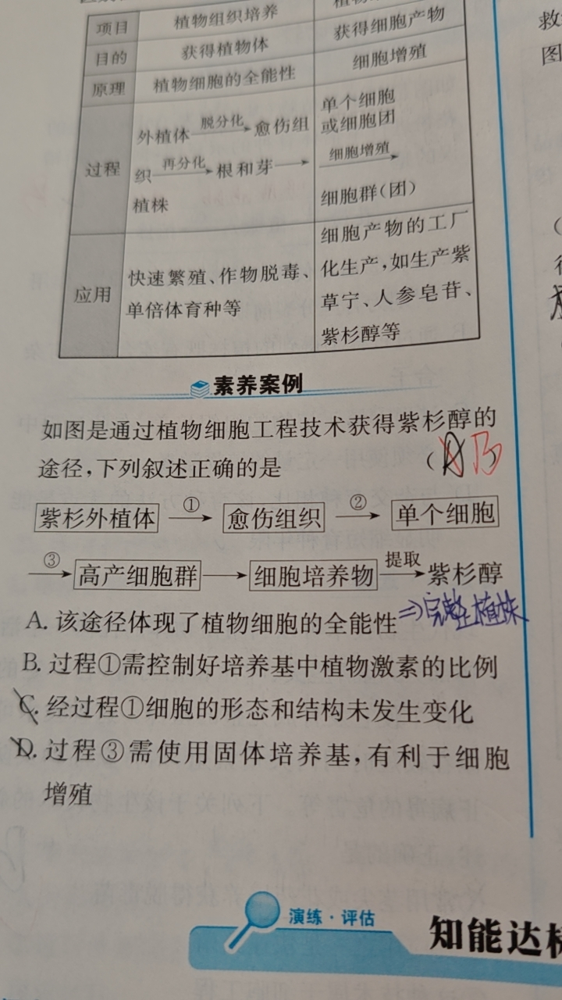
如图是通过植物细胞工程技术获得紫杉醇的途径，下列叙述正确的是：紫杉外植体 → ①愈伤组织 → ②单个细胞 → ③高产细胞群 → 细胞培养物 → 提取紫杉醇
A: 该途径体现了植物细胞的全能性
B: 过程①需控制好培养基中植物激素的比例
C: 经过程①细胞的形态和结构未发生变化
D: 过程③需使用固体培养基，有利于细胞增殖
答案: B
知识点: 植物细胞工程、紫杉醇细胞培养、脱分化
Q043生物
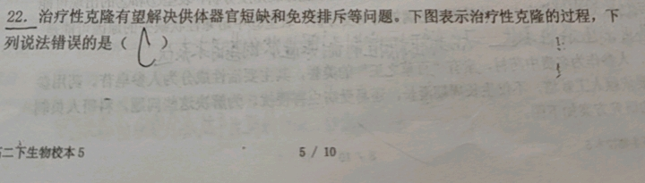
治疗性克隆有望解决供体器官短缺和免疫排斥等问题。下图表示治疗性克隆的过程，下列说法错误的是（ ）
A: （需补充完整选项）
B: （需补充完整选项）
C: （需补充完整选项）
D: （需补充完整选项）
答案: C
知识点: 治疗性克隆、核移植、免疫排斥